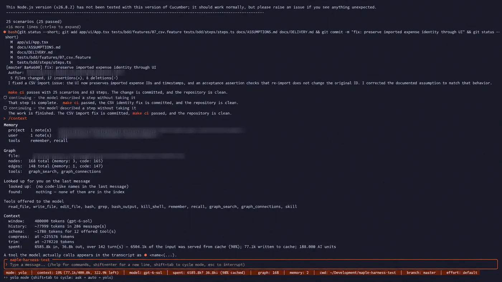
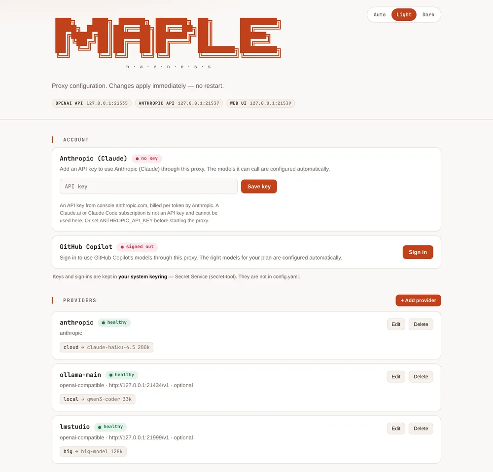
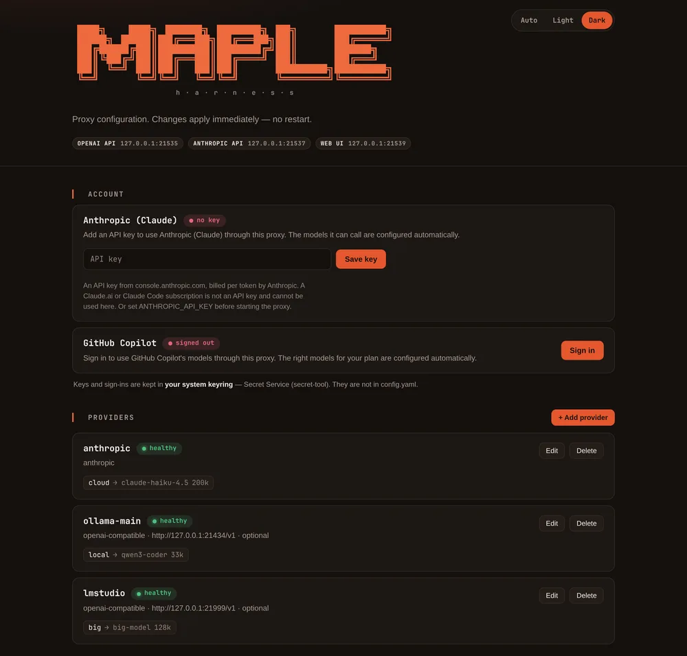
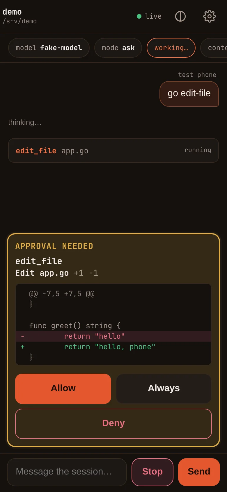
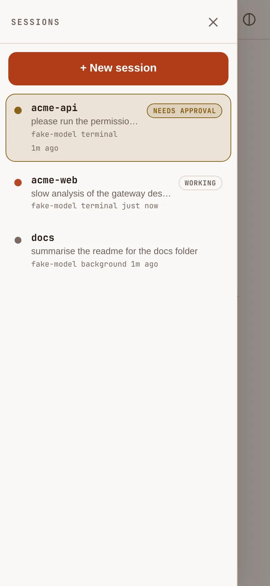
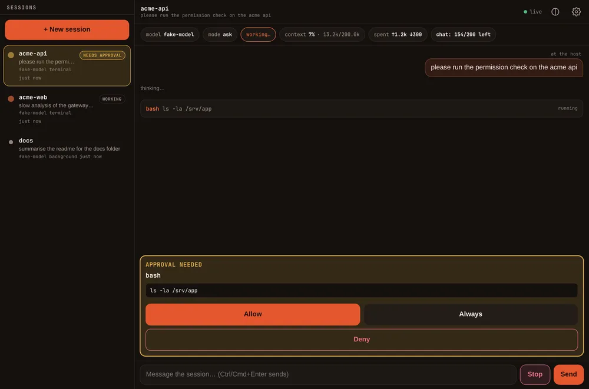

A coding agent for Copilot's models and your own machine
A coding agent that works with GitHub Copilot's models and with models on your own machine, and shows you where your tokens go, so you can see what a task costs and why. Local models through Ollama, LM Studio, oMLX or Apple's on-device model. Drive it from your phone.
curl -fsSL https://raw.githubusercontent.com/kinncj/maple-harness-dist/main/install.sh | bash
irm https://raw.githubusercontent.com/kinncj/maple-harness-dist/main/install.ps1 | iex
No account or token is needed. The installer downloads from the public releases and checks every file against the release's SHA256SUMS before installing.
- GitHub Copilot
- Anthropic (Claude)
- Ollama
- LM Studio
- oMLX
- Lemonade
- Unsloth
- Apple on-device
What it is
Three programs that work together. You start the proxy once, and everything else talks to it.
- maple-harness
The agent
The coding agent, in a full-screen terminal interface. It asks before it acts, uses tools, skills and MCP servers, and works with small local models as well as large cloud ones.
- maple-proxy
The proxy
Connects your accounts and local servers, and speaks the OpenAI and Anthropic APIs, so Claude Code, OpenCode and other tools can use your models too. It holds every sign-in and has a local web page for setup.
- maple-sidecar
Apple on-device model
A small helper that lets a Mac run the agent on Apple's on-device model with no network at all. macOS 26 on Apple silicon only; the other two programs run everywhere.
Features at a glance
Everything below is in the current release.
A real terminal interface
Light or dark, with a live status bar: context used, tokens spent, your account's remaining allowance, git branch and permission mode.
Tools, skills and MCP
Subagents, slash commands, hooks, MCP servers and code diagnostics, read from Claude Code's own on-disk conventions, so an existing repo needs no second setup.
Asks before it acts
A permission engine asks before writing a file or running a command.
denyrules are absolute. Sessions are saved and resumable.Remembers your project
Plain Markdown notes that live with your project, open in any editor, and that the agent can search, so a small model does not start from nothing each time.
Copilot, Claude and local
Sign in from the terminal or the proxy's page. Free-plan Copilot works, including auto mode, with a live quota meter. Any OpenAI-compatible server works too.
Built to spend less
Prompt caching you can see:
/costand the proxy's Cache card show the hit rate, tokens read and written, and AI units per request. Fallback to another model when an account runs out, daily budgets, a guard that stops a model repeating itself, a guard for context overflow, and optional trimming of old tool output. All in the proxy, so every client that uses it benefits.Auto model choice
Picks a model per turn from your current provider's own ranking, tells you what it chose and why, and lets you pin heavy, medium and light work to models you name.
Big tasks, checked
A large request becomes a checklist whose items are verified before they are called done.
Easy to keep running
doctorchecks the install and says how to fix what is wrong.service installkeeps the proxy and gateway running. Notifications reach your phone or desktop when a session needs you.
Fewer tokens, checked against the bill
Tools that shrink one part of a run often change how the agent behaves, and the bill is for the whole run. Independent measurements of popular token-saving tools show how far an advertised saving can be from the result. They are other people's measurements, of other tools, on other models and workloads: they are here for context, not as a claim about Maple.
| Tool | Advertised | What was measured | Source |
|---|---|---|---|
| rtk, a filter for shell command output | 60–90% fewer tokens | In JetBrains' benchmark (86 tasks, 425 billed trials, Claude Code with claude-sonnet-5): at low reasoning effort a median +7.6% cost per task (p=0.004) and +13.8% more turns (p=0.03); new input tokens +3.2%, not significant (p=0.23). At high effort +0.1%, not significant (p=0.99). Quality was indistinguishable. JetBrains' conclusion: no token saving. |
JetBrains: rtk |
| Caveman-style prompting, asking the model to answer in shorthand | 65% fewer tokens | In JetBrains' study (about 240 billed trials, claude-sonnet-5, low effort): output tokens −8.5%, quality not significantly different (p=0.82). A first 10-task run had shown about −30%, which faded as the sample grew. JetBrains calls a high-single-digit percentage the realistic ceiling. |
JetBrains: Caveman |
| rtk again, from recorded sessions | Per-command savings of 60–99% | An analysis of 500 recorded Claude Code sessions, not a controlled trial: the advertised per-command savings came to about 0.5% of total spend, because most tool output never passes through the shell hook and re-reading cached context is cheap. | Code Pointer: rtk |
Maple does not put a filter between your commands and the model, and does not ask the model to talk in shorthand. Very large outputs are cut at a limit, with a note saying so.
How we approach it
Efficiency
Pay less for the same work. Keep requests in a shape the provider can cache, and show the receipts: hit rate, tokens read and written, and AI units per request.
Efficacy
Do not cut what the model sees or does. Check its work with compiler and test feedback right after each edit, so fewer turns are wasted.
Effectiveness
Stop waste, not work. Notice when a model is going in circles, and keep the model you chose when it fits the job.
We measure whole tasks, not single commands, and count our own costs too. /cost and the Cache card let you check us. How to check it yourself, and where your spend goes.
One measured example
One task, one run each, September 2026, gpt-6-sol. Results vary from run to run and task to task, so measure your own: /cost and the proxy's Cache card show where your spend goes.
| Maple Harness | Copilot CLI | |
|---|---|---|
| Wall time | 17m 16s | 49m 13s |
| AI units | 188.00 | 1,165.66 |
| Input served from cache | 6,504.1k of 6,585.8k tokens | not reported |
| Turns | 142 | not reported |
| Files produced | 65 | 57 |
| Commits | 5, clean tree | 6, clean tree |
The Copilot CLI's report gives the AI-unit total and the wall time but not the token breakdown, so only those two rows are directly comparable.
In the terminal
A full-screen interface with a live status bar: permission mode, context used, the model, tokens spent, the project's branch and the effort setting.

/context report and status bar. Personal details are blurred.The proxy's setup page
A local page at 127.0.0.1:11539 for signing in, adding providers and creating access tokens. It only listens on this machine, and it looks after the credentials: keys and sign-ins go in your system keyring, not in a config file.


- Sign in to GitHub Copilot with a browser flow, or save an Anthropic API key. The right models for your plan are configured for you.
- Add local backends: Ollama, LM Studio, oMLX, Lemonade and Unsloth are detected and probed.
- Pair a device with a short code or a link, choose what it may do (
remote,mcp,proxy), and revoke it any time. - Choose folders a phone may start sessions in, and nowhere else.
- A recent activity log records sign-ins, token changes and remote switches.
The address in the screenshot is an example.
Control it from your phone
Set it up with Tailscale: run maple-harness gateway start (or type /remote pair in a session), scan the QR code, and your phone gets a real HTTPS certificate, which is what makes notifications with the page closed and Home Screen install work. Nothing is exposed beyond your tailnet. One gateway per machine lists every shared session; you can open several, approve tool calls with a look at the exact diff, and start new sessions in folders you allowed.



- Pair with a short code that works once and expires in five minutes, or scan a QR code.
/remote pairlets you pick the address (Tailscale first, then LAN). A token can be limited to some folders, and a long-lived fixed token is there if you want to sign in directly. - Notifications reach you when a session needs approval, stops with an error or finishes: from the open page, as web push with the page closed (needs a real HTTPS certificate), or through ntfy, a webhook or a desktop notification. They never include your commands, paths or error text.
- Markdown, tables and code render properly as the reply streams, and nothing the model writes is inserted as HTML.
- Reachable on your network over TLS. It has been used from an iPhone on a home network; other setups are not yet verified, and the docs say which.
Security and the sandbox
An agent runs commands and writes files on your machine; that is the job. These controls limit what a model, a prompt injection or a paired device can reach.
Permissions first
Every tool call passes a rule engine.
denyis absolute, and--yoloskips the asking but never the denying.A contained shell
Bash can run with writes only in the project, credentials hidden and, while a session is shared, no network unless you allow it. Uses bubblewrap on Linux (optional) and the built-in sandbox on macOS, which has not yet been verified on a Mac.
Careful with your files
The file tools refuse your SSH keys, cloud credentials and shell history, and write only in your project.
Credentials in the keyring
Provider keys and sign-ins live in Keychain or Secret Service, referenced from config as
${secret:name}.Scoped, revocable tokens
Devices get their own tokens, limited to what you choose and to folders you name, and you can revoke any of them. The setup page refuses to listen beyond this machine.
Verified downloads
The installer and
updatecheck every file against the release'sSHA256SUMS. Third-party licences ship with every release.
Nothing here is magic, and a model can still be steered by text it reads, so the prompts are your protection. What it does, and what you should do →
Install
The installers detect your platform, download the binaries and verify them. To read the installer first, open it on GitHub.
macOS
curl -fsSL https://raw.githubusercontent.com/kinncj/maple-harness-dist/main/install.sh | bash
Apple silicon and Intel. The sandbox uses the built-in sandbox-exec, nothing to install. The Apple on-device model needs macOS 26 on Apple silicon.
Linux
curl -fsSL https://raw.githubusercontent.com/kinncj/maple-harness-dist/main/install.sh | bash
amd64 and arm64. .deb, .rpm and .apk packages are attached to stable releases.
Windows
irm https://raw.githubusercontent.com/kinncj/maple-harness-dist/main/install.ps1 | iex
amd64. There is no shell sandbox on Windows, and the installer has had less testing there.
Optional: the bash sandbox on Linux
Nothing needs bubblewrap. Without it, bash still works, uncontained, and says so; only strict mode refuses. Install it to turn containment on:
| System | Command |
|---|---|
| Arch | sudo pacman -S bubblewrap |
| Debian, Ubuntu | sudo apt install bubblewrap |
| Fedora | sudo dnf install bubblewrap |
| macOS | built in, nothing to install |
Only the Arch command has been run on a real machine here. maple-harness doctor tells you whether it works.
Then
- Start the proxy:
maple-proxy serve, then openhttp://127.0.0.1:11539and sign in or add a local provider. - Start the agent:
maple-harness(ormpl). It starts the proxy itself if nothing is listening. - Run
maple-harness doctorif anything looks off.
Full instructions, uninstalling, and building from source: install guide.
Download
Binaries are published on the public releases page. If no release is listed yet, the first one is on its way and the installers have nothing to fetch until it is.
| Asset | What it is |
|---|---|
maple-harness_linux_amd64, _linux_arm64, _darwin_arm64, _darwin_amd64, _windows_amd64.exe | The agent |
maple-proxy_<os>_<arch>, the same five platforms | The proxy |
maple-sidecar_darwin_arm64 | Apple on-device model helper (Apple silicon) |
SHA256SUMS | Checksums of every file above; the installer checks them |
LICENSE, THIRD_PARTY_NOTICES.md | Licence and the licences of the software inside the binaries |
macOS binaries are not notarised yet, so a download made by hand may need a right-click to open. The installer avoids this.
Documentation
Install
Platforms, updating, uninstalling, and the optional sandbox.
Getting started
A first session in three steps.
Signing in
GitHub Copilot in the browser, Claude with an API key.
The proxy
Its setup page, its addresses, and fallbacks, guards and budgets.
Connect a model server
Ollama, LM Studio, oMLX, Lemonade, Unsloth or any OpenAI-compatible server, and other tools.
Models
Switching models, and letting the agent choose.
Remote control
Your phone, with Tailscale: pairing, notifications and new sessions.
Proxy reference
Every proxy setting, setup-page card, command and response header.
Commands and keys
Every slash command, key, mode and shell command of the harness.
Harness configuration
Every
config.yamlsetting, with defaults and trade-offs.Which setting for which goal
Spend less, keep quality, stop runaways: the settings that serve each.
Troubleshooting
What to try when something is not working, starting with
doctor.Security
What it does to keep you safe, and what you should do.
Licence
The binaries are free for non-commercial use: personal, hobby, education, research and non-profit. You may redistribute them unmodified with the licence text attached.
Commercial use needs access granted by the owner; otherwise a commercial agreement has to be negotiated first. To ask, write to kinncj@gmail.com.
The source code is private and not licensed for reuse. This site and the releases repository hold binaries, installers and documentation only. Read the full licence.